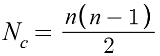
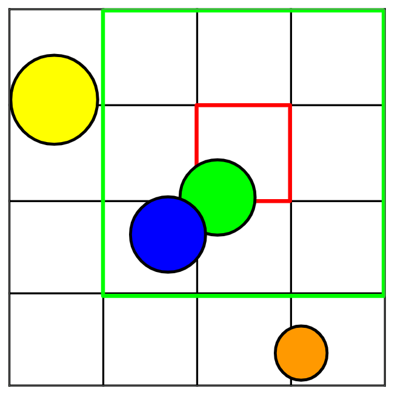
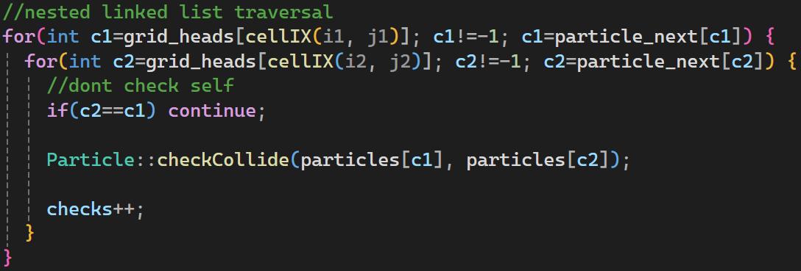
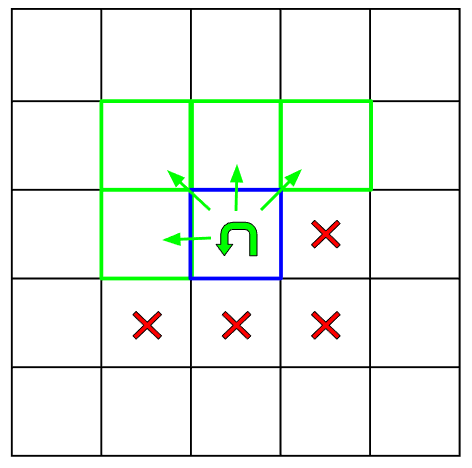
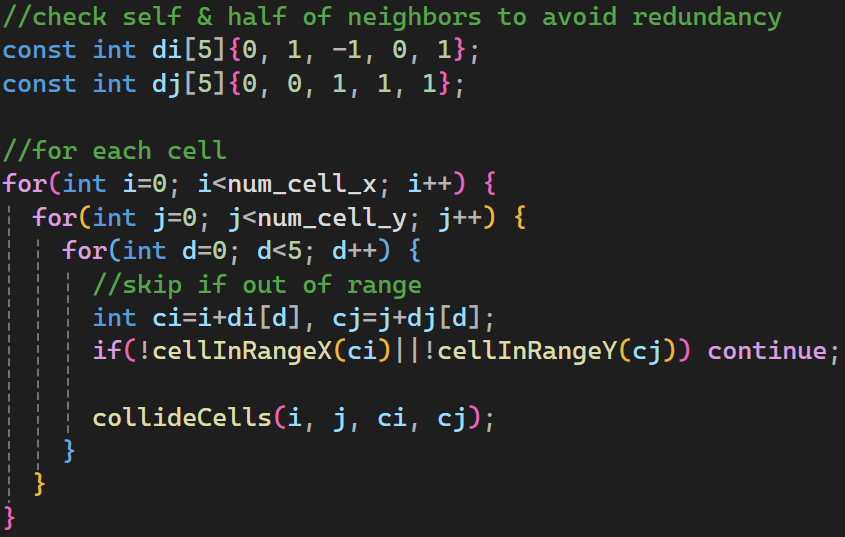

Overview
This project is a simulation of dense particle collisions.
To do this, the collision detection system needs each particle to check every other particle for overlap.
This yeilds a quite inefficient number of checks that need to be computed each update step:

This means the number of checks goes up with the square of the number of particles.
To optimize this, the solver implements a spatial hash grid.
Each frame, a grid of cells sized by the largest particle is initialized.
Then all particles are binned into the cells based on their truncated position.
Then to check a particle for collisions, it need only check the surrounding 8 cells:

The red cell houses the green particle's center.
The green region is the cells it needs to check: its neighbors and self.
This means the orange particle need not check against the green, blue, or yellow particle.
The clever spacing of the grid prevents this from being possible.
To ensure the grid is not reallocated each update step, a maximum radius is stored for the grid.
When particles are added or removed, this maximum radius is recalculated.
If it changed, the cell size is set to twice that radius and the grid is reallocated.
Each update step, two grids of integers are stored:
grid_heads of size num_x*num_y stores the index of the
first particle in that grid cell.
particle_next of size max_particles stores the
next particle in the list.
(note: an index of -1 means there is no particle in the cell/last particle in list)
This data structure is basically a grid of linked-lists.
The following shows how a traversal of these lists can be used to search for collisions between cells (i1, j1) and (i2, j2):

Checking the 8 surrounding cells is actually naive and redundant.
For example, cell (0, 0) checks (1, 1) and cell (1, 1) would check (0, 0).
To thwart this, while iterating, cells need only check themselves and the previous cells:

The blue cell is the current cell.
The green arrows denote a cell to be checked against.
The red x's are the cells where a check would be superfluous.
The following is a way to implement such a system:

Possible Use Case
This system can be extended to three dimensions.
It can also be ported to any particle system that needs to compute collisions.
In general, a particle system could be used to model:
• Aerodynamic/hydrodynamic simulations to study drag
• Wind/ocean currents for weather services
• Sand/grain simulation for farming equipment